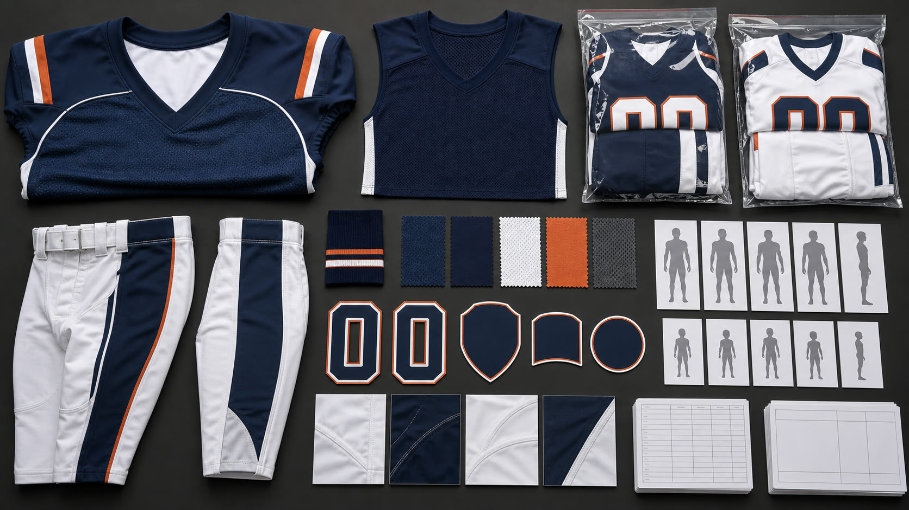

Game Jerseys, Pants, and 7-on-7 Sets
- Broad-sleeve game jerseys, football pants, lightweight 7-on-7 jerseys and shorts, and practice tops
- Define garment measurements relative to the buyer's approved layering setup; protective equipment is outside this apparel scope
- Separate contact-game, non-contact, youth, adult, home, away, and practice specifications